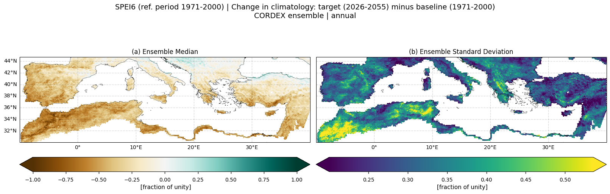
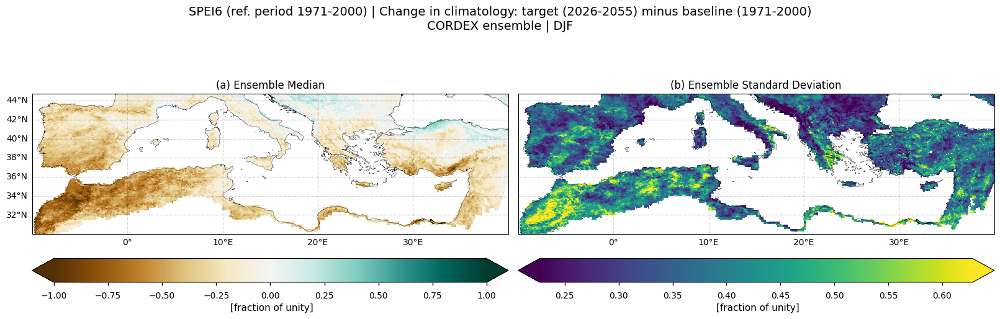
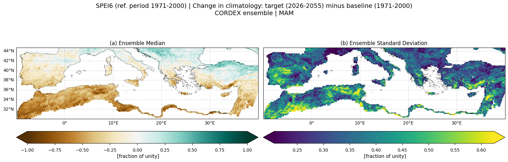
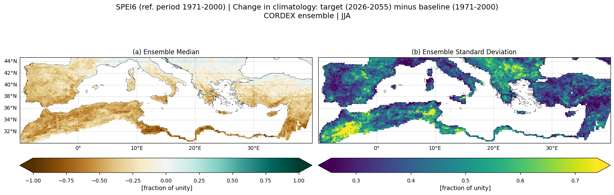
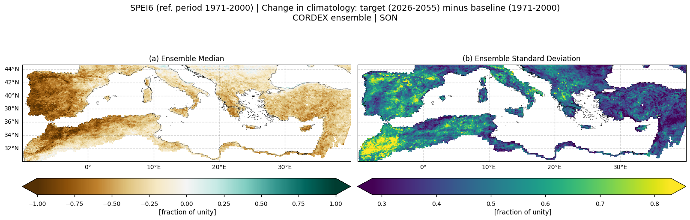
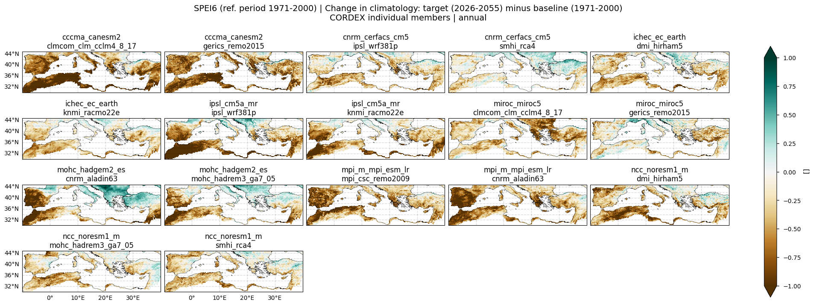
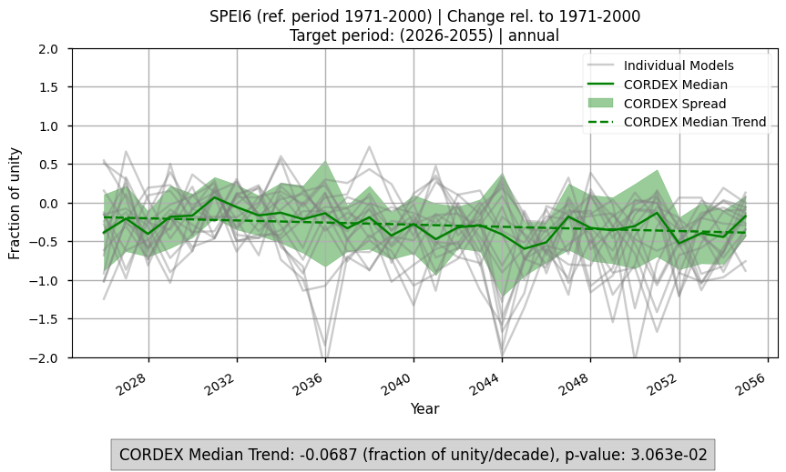

5.2.1. Near-future CORDEX projections of the SPEI6 drought index over the Mediterranean region#
Production date: 25-03-2026
Produced by: CMCC foundation - Euro-Mediterranean Center on Climate Change. Albert Martinez Boti and Lorenzo Sangelantoni.
🌍 Use case: Investigating drought biases to inform water management#
❓ Quality assessment question#
What are the projected future changes and associated uncertainties in droughts over the Mediterranean?
The Standardized Precipitation-Evapotranspiration Index (SPEI) [1] is a widely used drought indicator that integrates precipitation and potential evapotranspiration, providing a more complete measure of water deficits than precipitation alone. Its multiscalar formulation allows the evaluation of different types of drought [2], from short-term agricultural or soil moisture deficits to long-term hydrological or ecological events. Being standardized, SPEI is dimensionless, facilitating comparisons across regions and climates. By capturing variations in frequency, duration, and severity, it effectively reflects the complex nature of drought, making it a robust and physically meaningful proxy for drought assessment in the context of climate change [3].
Understanding SPEI is particularly relevant for the water management sector. By capturing multiple types of drought SPEI serves as a versatile indicator for various users. Climate projections using SPEI enable planners to anticipate future water deficits, guide allocation, and design effective strategies for reservoir management, irrigation, and drought preparedness, helping to reduce socio-economic and ecological impacts [4][5].
This assessment uses data from a subset of models from CORDEX Regional Climate Models (RCMs) to explore the signal and the uncertainty in future projections of the SPEI6 index. The analysis focuses on the Mediterranean region, evaluating changes in SPEI6 for the near-future period (2026–2055; under the RCP8.5 scenario) relative to the 1971–2000 baseline, which serves as the reference period for standardisation. The projected uncertainty is assessed by considering the ensemble inter-model spread of projected changes.
This notebook complements the evaluation of the biases of the same subset of CORDEX models performed through the assessment named “CORDEX biases in the SPEI6 drought index over the Mediterranean region”
📢 Quality assessment statement#
These are the key outcomes of this assessment
The CORDEX ensemble median for the subset of models considered in this assessment indicates an overall increase in projected drought conditions for the near-term future (2026–2055) under the RCP8.5 scenario.
There is substantial inter-model spread, with differences in both the magnitude and, in some cases, the sign of projected SPEI6 changes, especially at regional and seasonal scales.
Despite inter-model spread, SPEI6 anomalies remain predominantly below zero at the Mediterranean scale, indicating a consistent basin-wide tendency towards drier conditions.
Results should be interpreted alongside the “CORDEX biases in the SPEI6 drought index over the Mediterranean region” assessment, which shows a general underestimation of drought conditions relative to ERA5 for the same subset of models, suggesting that the obtained projected drought intensification may be conservative.
Although results are broadly consistent with the C3S Atlas, some minor differences in the magnitude of projected changes arise, likely due to differences in ensemble composition and standardisation periods, reinforcing the value of multi-model assessments.
{kind=link}
Fig. 5.2.1.1 Spatial patterns of SPEI6 change over the Mediterranean region. Panels show (a) CORDEX ensemble median (median of the selected subset of models at each grid cell) and (b) ensemble spread (standard deviation across the selected models). SPEI6 is standardised over the reference period 1971–2000. SPEI6 change is calculated at each grid point as the difference between the monthly climatologies of the target period (2026–2051) and the baseline period (1971–2000), and then averaged to obtain the ANNUAL mean. Future projections used for the target period follow the RCP8.5 scenario.#
📋 Methodology#
The Standardized Precipitation-Evapotranspiration Index accumulated to six months (SPEI6) has been calculated for this assessment — through the use of xclim — as a proxy to evaluate projected drought conditions for a subset of CORDEX models. The study covers the Mediterranean domain, following IPCC-AR6 regional definitions [6]. Results include spatial maps of SPEI6 changes for the near-future period (2026–2055) relative to the 1971–2000 baseline, which serves as the reference period for standardisation. Additionally, time series are computed to show the temporal evolution of future SPEI6 changes. Uncertainty is assessed through the inter-model ensemble spread, defined as the standard deviation across the selected subset of models, of projected SPEI6 changes.
Potential evapotranspiration (PET) is calculated with the Hargreaves method [7], which requires only maximum and minimum temperature (and optionally mean temperature), providing a computationally efficient yet robust estimate (e.g., [8]). The accumulated series of precipitation minus PET is then standardised over the 1971–2000 reference period.
Five key concepts are defined:
Reference period: The period used to standardise SPEI values, here 1971–2000.
Baseline period: The period against which changes are calculated. In this notebook the baseline period is selected to be the same as the reference period.
Target period: The future period for which changes are evaluated, here 2026–2055. The Representative Concentration Pathway is set to the RCP8.5 scenario for this assessment.
SPEI6 change: Differences in SPEI6 between the target period and the baseline, representing anomalies in drought conditions. Since, in this notebook, the baseline and the reference period are the same, these changes directly represent anomalies relative to the standardisation climatology used to compute SPEI6.
The analysis and results follow the next outline:
1. Parameters, requests and functions definition
This notebook follows the same methodology as the assessment ‘CORDEX biases in the SPEI6 drought index over the Mediterranean region’. However, the reference period (1971–2000) is shorter than the 1971–2010 period used in the historical assessment. This choice avoids including scenario data in the standardisation (as CORDEX historical simulations extend only until 2005), ensures computational efficiency due to the shorter period, and maintains consistency with the 30-year length of the future target period.
📈 Analysis and results#
1. Parameters, requests and functions definition#
1.1. Import packages#
1.2. Define Parameters#
In the “Define Parameters” section, various customisable options for the notebook are specified:
The reference and baseline periods are set to be the same in this notebook and can be adjusted by modifying
reference_slice; the default range is 1971-2000.The target period can be adjusted by modifying
target_slice; the default range is 2026-2055.A check is performed on the
target_sliceandreference_sliceto ensure consistency with CDS CORDEX requests and to verify that the reference period falls within the historical experiment, i.e. the last year ofreference_slicedoes not exceed 2005.collection_idis not customisable for this assessment and is set to ‘CORDEX’.The
areaparameter specifies the geographical domain of interest. By default, the Mediterranean domain is used, following IPCC-AR6 regional definitions [6]The
time_aggallows selecting the time aggregation for the analysis. Options include: annual, DJF, MAM, JJA, SON, Jan, Feb, Mar, Apr, May, Jun, Jul, Aug, Sep, Oct, Nov, Dec.SPEI accumulation window (
window): Defines the accumulation period in months for the SPEI calculation. Common options include 3, 6, or 12 months, depending on whether short-term or long-term droughts are of interest. In this assessment, a six-month accumulation is used.rcm_model_regridandgcm_driven_model_regridspecify the EURO-CORDEX regional climate model and the driving global climate model, respectively, whose grid will be used as the target for remapping. Note that both models must be included in the matrix of RCM-GCM combinations defined by themodels_cordexdictionary in Section 1.3.The
chunksselection allows the user to define if dividing into chunks when downloading the data on their local machine. Although it does not significantly affect the analysis, it is recommended to keep the default value for optimal performance.
1.3. Define models#
The following climate analyses are performed using a subset of CORDEX models that provide both the historical and RCP8.5 experiments, as well as maximum, minimum and mean temperature and precipitation, within the Climate Data Store (CDS). All Global Climate Models (GCMs) driving the selected CORDEX simulations were included, and the selection ensures a representative coverage of the available Regional Climate Models (RCMs). The selected models are the same as those used for the historical evaluation in the assessment titled “CORDEX biases in the SPEI6 drought index over the Mediterranean region”.
1.4. Define land-sea mask and ERA5 precipitation requests#
Within this notebook, ERA5 will be used to download the land-sea mask when plotting. In this section, we set the required parameters for the cds-api data-request of ERA5 land-sea mask. A request for monthly ERA5 precipitation data is also defined to compute a bare-earth (barrean) mask, which needs to be applied to ensure meaningful results in arid regions.
1.5. Define model requests#
In this section we set the required parameters for the cds-api data-request.
1.6. Functions to cache#
In this section, functions that will be executed in the caching phase are defined. Caching is the process of storing copies of files in a temporary storage location, so that they can be accessed more quickly. This process also checks if the user has already downloaded a file, avoiding redundant downloads.
Description of the main functions:
compute_spei_cordex_fut: Uses the xclim package to calculate the Standardized Precipitation-Evapotranspiration Index (SPEI). Thereference_sliceargument specifies the reference period used for standardization, while thewindowargument defines the number of months over which precipitation and evapotranspiration are accumulated (6 months in this assessment).get_mask_pr: Generates a mask identifying grid points where precipitation is below 0.3 mm/day, allowing filtering of extremely dry regions.
2. Downloading and processing#
2.1. Download and transform the regridding model#
In this section, the download.download_and_transform function from the c3s_eqc_automatic_quality_control package is employed to download daily data from the selected EURO-CORDEX regridding model, select the subregion of interest, compute daily potential evapotranspiration, calculate the daily water balance, and derive the SPEI (SPEI6 for this assessment). Results are cached to avoid redundant downloads and repeated processing.
The regridding model here refers to the model whose grid is used as the target grid for remapping the other models. This ensures all datasets share a common grid, facilitating direct comparison at each grid cell. Within this notebook, the regridding model is set to "ichec_ec_earth_dmi_hirham5" but it can be changed by modifying the gcm_driven_model_regrid and rcm_model_regrid parameters in Section 1.2. Note that both models must be included in the matrix of RCM-GCM combinations defined by the models_cordex dictionary in Section 1.3. It is important to highlight that the choice of the target grid can impact the analysis depending on the specific application.
2.2. Download and transform models#
In this section, the download.download_and_transform function from the ‘c3s_eqc_automatic_quality_control’ package is used to download daily data from CORDEX models, compute daily potential evapotranspiration, calculate the daily water balance, and derive the SPEI (SPEI6 for this assessment). SPEI6 is computed on each model’s native grid and also on the "ichec_ec_earth_dmi_hirham5" grid to enable bias assessment. When regridding is required, it is performed for each essential climate variable before the index calculation to preserve standardisation. Results are cached to avoid redundant downloads and repeated processing.
model='cccma_canesm2_clmcom_clm_cclm4_8_17'
model='cccma_canesm2_gerics_remo2015'
model='cnrm_cerfacs_cm5_ipsl_wrf381p'
model='cnrm_cerfacs_cm5_smhi_rca4'
model='ichec_ec_earth_dmi_hirham5'
model='ichec_ec_earth_knmi_racmo22e'
model='ipsl_cm5a_mr_ipsl_wrf381p'
model='ipsl_cm5a_mr_knmi_racmo22e'
model='miroc_miroc5_clmcom_clm_cclm4_8_17'
model='miroc_miroc5_gerics_remo2015'
model='mohc_hadgem2_es_cnrm_aladin63'
model='mohc_hadgem2_es_mohc_hadrem3_ga7_05'
model='mpi_m_mpi_esm_lr_mpi_csc_remo2009'
model='mpi_m_mpi_esm_lr_cnrm_aladin63'
model='ncc_noresm1_m_dmi_hirham5'
model='ncc_noresm1_m_mohc_hadrem3_ga7_05'
model='ncc_noresm1_m_smhi_rca4'
2.3. Apply land-sea mask and change some attributes#
This section changes some attributes and applies a land–sea mask to all models. A bare-earth (barrean) mask is also applied to ensure meaningful results in arid regions, as in the C3S atlas. In particular, we follow the methodology available in their Github repository. While their implementation of the mask also considers factors such as snow depth and vegetation cover, here we only apply the filter based on annual mean precipitation for 1971–2000 being less than 0.3 mm day⁻¹. This simplification is justified because, in the region under consideration, the bare-earth mask obtained with the full set of filters closely matches the one derived from the precipitation threshold alone.
Note: ds_interpolated contains data from the models regridded to the "ichec_ec_earth_dmi_hirham5" grid. model_datasets contain the same data on the original grid of each model. Regridding is performed for every essential climate variable prior to the index calculation in order to avoid compromising standardisation.
100%|██████████| 1/1 [00:00<00:00, 25.66it/s]
3. Plot and describe results#
This section will display the following results:
SPEI6 change maps. The layout includes the ensemble median (defined as the median of the change values across the selected subset of models at each grid cell) and the ensemble spread (calculated as the standard deviation of the change across the selected subset of models).
SPEI6 change maps for each individual model.
Time series of SPEI6 change (averaged over the Mediterranean region).
Note: The projected SPEI6 change is calculated at each grid point as the arithmetic difference between climatologies in the target period (2026–2055) and the baseline period (1971–2000).
3.1. Define plotting functions#
The functions presented here are used to calculate SPEI6 changes and generate corresponding layout plots. Three types of layout can be displayed, depending on the plotting function:
Reference and ensemble summary: Includes the ensemble median and the ensemble spread. This is generated using
plot_ensemble().Individual models: Displays all models individually using
plot_models().
Calculation of SPEI6 change:
compute_spei_change()calculates SPEI6 change at each grid point as the arithmetic difference between monthly climatologies of the target period (2026–2055) and the baseline period (1971–2000). It then aggregates the change according to the user-specifiedtime_aggin Section 1.2.compute_change_4timeseries()computes SPEI6 anomalies relative to the baseline climatology for each month of the timeseries and aggregates them according to thetime_aggparameter. This provides monthly, seasonal, or annual-level information depending on the user’s selection.
3.2. Plot ensemble maps#
In this section, we invoke the plot_ensemble() function to visualise the SPEI6 change for (a) the ensemble median (defined as the median of the change values for the selected subset of models at each grid cell) and (b) the ensemble spread (calculated as the standard deviation of the change across the selected subset of models).
ANNUAL aggregation

Fig 1. Spatial patterns of SPEI6 change over the Mediterranean region. Panels show (a) CORDEX ensemble median (median of the selected subset of models at each grid cell) and (b) ensemble spread (standard deviation across the selected models). SPEI6 is standardised over the reference period 1971–2000. SPEI6 change is calculated at each grid point as the difference between the monthly climatologies of the target period (2026–2051) and the baseline period (1971–2000), and then averaged to obtain the ANNUAL mean. Future projections used for the target period follow the RCP8.5 scenario.
3.3. Plot ensemble maps - Seasonal aggregations#
Same as 3.2 section but for: DJF, MAM, JJA and SON
WINTER (DJF)

Fig 2. Spatial patterns of SPEI6 change over the Mediterranean region. Panels show (a) CORDEX ensemble median (median of the selected subset of models at each grid cell) and (b) ensemble spread (standard deviation across the selected models). SPEI6 is standardised over the reference period 1971–2000. SPEI6 change is calculated at each grid point as the difference between the monthly climatologies of the target period (2026–2051) and the baseline period (1971–2000), and then averaged across the winter to obtain the DJF mean. Future projections used for the target period follow the RCP8.5 scenario.
SPRING (MAM)

Fig 3. Spatial patterns of SPEI6 change over the Mediterranean region. Panels show (a) CORDEX ensemble median (median of the selected subset of models at each grid cell) and (b) ensemble spread (standard deviation across the selected models). SPEI6 is standardised over the reference period 1971–2000. SPEI6 change is calculated at each grid point as the difference between the monthly climatologies of the target period (2026–2051) and the baseline period (1971–2000), and then averaged across the spring to obtain the MAM mean. Future projections used for the target period follow the RCP8.5 scenario.
SUMMER (JJA)

Fig 4. Spatial patterns of SPEI6 change over the Mediterranean region. Panels show (a) CORDEX ensemble median (median of the selected subset of models at each grid cell) and (b) ensemble spread (standard deviation across the selected models). SPEI6 is standardised over the reference period 1971–2000. SPEI6 change is calculated at each grid point as the difference between the monthly climatologies of the target period (2026–2051) and the baseline period (1971–2000), and then averaged across the summer to obtain the JJA mean. Future projections used for the target period follow the RCP8.5 scenario.
AUTUMN (SON)

Fig 5. Spatial patterns of SPEI6 change over the Mediterranean region. Panels show (a) CORDEX ensemble median (median of the selected subset of models at each grid cell) and (b) ensemble spread (standard deviation across the selected models). SPEI6 is standardised over the reference period 1971–2000. SPEI6 change is calculated at each grid point as the difference between the monthly climatologies of the target period (2026–2051) and the baseline period (1971–2000), and then averaged across the autumn to obtain the SON mean. Future projections used for the target period follow the RCP8.5 scenario.
3.4. Plot model maps#
In this section, we invoke the plot_models() function to visualise the SPEI6 change of every model individually. Note that the model data used in this section maintains its original grid. Only the annual mean is shown here.

Fig 6. Spatial patterns of SPEI6 change for each individual CORDEX model over the Mediterranean region. SPEI6 is standardised over the reference period 1971–2000. For each model, SPEI6 change is calculated at each grid point as the difference between the monthly climatologies of the target period (2026–2055) and the baseline period (1971–2000), and then averaged to obtain the annual mean. Future projections used for the target period follow the RCP8.5 scenario.
3.5. Timeseries#
This section shows the timeseries of SPEI6 anomalies relative to the reference period climatology (same period as the baseline for this notebook). We first use compute_change_4timeseries(), which calculates SPEI6 anomalies for each month of the target period (relative to the baseline monthly climatologies) and aggregates them according to the time_agg parameter. Spatially averaged values are then obtained. The analysis compares the CORDEX ensemble median and individual models and shows the ensemble spread and the slope value of the trend for the CORDEX ensemble median. Only the annual aggregation is shown here.

Fig 7. Timeseries of SPEI6 anomalies over the Mediterranean region. Monthly anomalies are calculated relative to the monthly baseline climatologies, aggregated according to the specified timescale, and then spatially averaged over the region. The figure compares the CORDEX ensemble median and individual models, showing the trend for the ensemble median, as well as the ensemble spread and the corresponding trend slope. Future projections used for the target period follow the RCP8.5 scenario.
3.6. Results summary#
The projected SPEI6 change for the near-term future (2026–2055) indicates an overall decrease in the index (Fig. 1), suggesting a general intensification of drought conditions. However, a large inter-model spread is evident, with substantial disparities not only in the magnitude of change but also in its sign (see Fig. 6). Some models project wetter conditions than the baseline, particularly over regions such as the Balkans, southern France, the Adriatic coast of Italy, and parts of Turkey.
The inter-model spread spatial patterns are sensitive to the temporal aggregation considered (Figs. 1–5), with the largest inter-model discrepancies occurring in spring.
The timeseries of spatial means over the Mediterranean shows an increase in projected drought conditions for the near-term future period (Fig. 7). For the CORDEX ensemble median, the timeseries shows a slight (but statistically significant) negative trend over this period. Although the trend is weak and the inter-model spread is substantial, most individual models—and the ensemble median—remain consistently below zero. This indicates that drier conditions are projected for the annual aggregation over the region, as anomalies are defined relative to the historical baseline period.
This assessment is broadly consistent with results from the interactive C3S Atlas. The Atlas indicates slightly stronger decreases in SPEI6, which may be partly explained by differences in the standardisation periods used and the larger ensemble of models considered. It is also worth noting that the C3S Atlas enables exploration of projected SPEI6 changes from CORDEX models across different seasons, months, global warming levels, and time horizons (near-, mid-, and long-term).
3.7. Implications for the users#
The subset of CORDEX models considered in this notebook shows an overall projected increase in drought conditions for the near-term future (2026–2055) under the RCP8.5 scenario, although there is high inter-model spread and some models project wetter conditions in certain regions and seasons, suggesting substantial uncertainty for those cases.
Despite this spread, the time series analysis shows that SPEI6 anomalies remain predominantly below zero for the Mediterranean domain. This suggests a robust signal towards drier conditions at the aggregated (basin-wide) scale.
These results should be interpreted alongside the “CORDEX biases in the SPEI6 drought index over the Mediterranean region” assessment, which evaluated model performance over the historical period (1971–2010). That assessment indicates a general underestimation of drought conditions relative to ERA5 for the same subset of models, suggesting that future drought intensification may be conservative in the present analysis.
The results are broadly consistent with those from the C3S Atlas, although the magnitude of the projected decrease in SPEI6 is slightly lower here. These differences reinforce the importance of considering as large an ensemble of CORDEX GCM–RCM combinations as possible.
The pronounced inter-model spread in several regions indicates elevated uncertainty in projected drought conditions. This should be accounted for in decision-making, supporting risk-based approaches that stress-test adaptation strategies across a range of plausible futures rather than relying on a single model or scenario.
ℹ️ If you want to know more#
Key resources#
Some key resources and further reading were linked throughout this assessment.
The CDS catalogue entries for the data used were:
CORDEX regional climate model data on single levels (daily - Maximum 2m temperature in the last 24 hours, Minimum 2m temperature in the last 24 hours, 2m air temperature and Mean precipitation flux): https://cds.climate.copernicus.eu/datasets/projections-cordex-domains-single-levels?tab=overview
ERA5 monthly averaged data on single levels from 1940 to present (total precipitation): https://cds.climate.copernicus.eu/datasets/reanalysis-era5-single-levels-monthly-means?tab=overview
Code libraries used:
C3S EQC custom functions,
c3s_eqc_automatic_quality_control, prepared by B-Open
References#
[1] Vicente-Serrano, S. M., Beguerı́a, S., and López-Moreno, J. I., 2010. A multiscalar drought index sensitive to global warming: The standardized precipitation evapotranspiration index, Journal of Climate, 23, 1696–1718. https://doi.org/10.1175/2009JCLI2909.1
[2] Wilhite, D. A., 2000. Droughts as a natural hazard: concepts and definitions. In: DROUGHT, A Global Assessment, vol. I and II, Routledge Hazards and Disasters Series, Routledge.
[3] Vicente-Serrano, S. M., Beguerı́a, S., Lorenzo-Lacruz, J., Camarero, J. J., López-Moreno, J. I., Azorin-Molina, C., Revuelto, J., Morán-Tejeda, E., and Sanchez-Lorenzo, A., 2012. Performance of drought indices for ecological, agricultural, and hydrological applications, Earth Interactions, 16, https://doi.org/10.1175/2012EI000434.1
[4] Kalisoras, A., Georgoulias, A. K., Akritidis, D., and Zanis, P., 2025. Future Projections in Agricultural Drought Characteristics for Greece Under Different Climate Change Scenarios. Environmental and Earth Sciences Proceedings, 35(1), 29. https://doi.org/10.3390/eesp2025035029
[5] Spinoni, J., Barbosa, P., Bucchignani, E., Cassano, J., Cavazos, T., Cescatti, A., Christensen, J. H., Christensen, O. B., Coppola, E., Evans, J. P., Forzieri, G., Geyer, B., Giorgi, F., Jacob, D., Katzfey, J., Koenigk, T., Laprise, R., Lennard, C. J., Kurnaz, M. L., … Dosio, A., 2021. Global exposure of population and land-use to meteorological droughts under different warming levels and SSPs: A CORDEX-based study. International Journal of Climatology, 41(15), 6825–6853. https://doi.org/10.1002/joc.7302
[6] Iturbide, M., Gutiérrez, J. M., Alves, L. M., Bedia, J., Cerezo-Mota, R., Cimadevilla, E., Cofiño, A. S., Di Luca, A., Faria, S. H., Gorodetskaya, I. V., Hauser, M., Herrera, S., Hennessy, K., Hewitt, H. T., Jones, R. G., Krakovska, S., Manzanas, R., Martínez-Castro, D., Narisma, G. T., Nurhati, I. S., Pinto, I., Seneviratne, S. I., van den Hurk, B., and Vera, C. S., 2020. An update of IPCC climate reference regions for subcontinental analysis of climate model data: definition and aggregated datasets, Earth Syst. Sci. Data, 12, 2959–2970, https://doi.org/10.5194/essd-12-2959-2020
[7] Hargreaves, G. H., and Samani, Z. A., 1985. Reference crop evapotranspiration from temperature, Applied engineering in agriculture, pp. 96–99. https://doi.org/10.13031/2013.26773
[8] Beguerı́a, S., Vicente-Serrano, S. M., Reig, F., and Latorre, B., 2014. Standardized precipitation evapotranspiration index (spei) revisited: Parameter fitting, evapotranspiration models, tools, datasets and drought monitoring, International Journal of Climatology, 34, 3001–3023. https://doi.org/10.1002/joc.3887